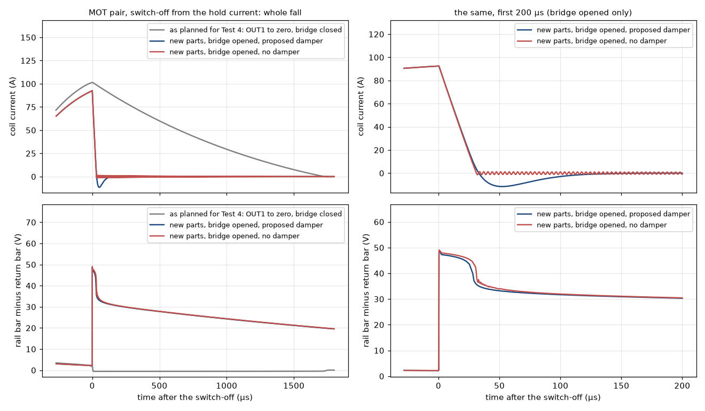
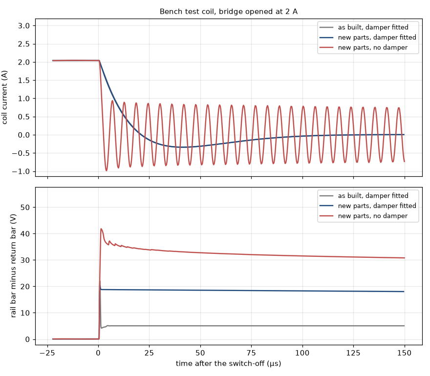
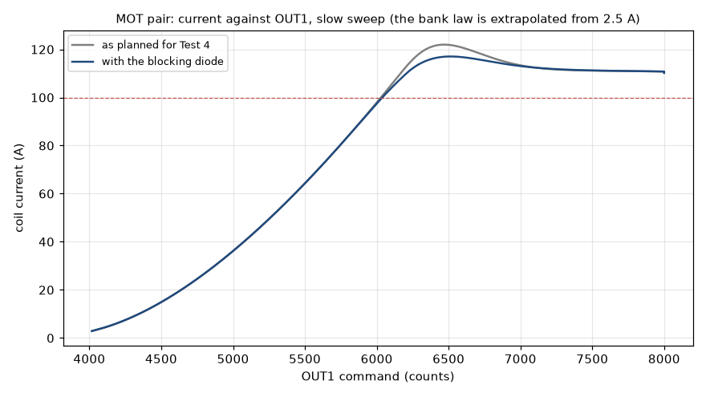

Project file ansys/coil_servo_fast_turnoff.aedt (designs bench_ft and mot_ft): the circuit as built plus a 5KP30A surge protector between the rail bar and the return bar, and a DSS2X101-015A blocking diode in the supply's + lead. Neither part is fitted yet, so nothing here has been measured. The numbers for the two parts were typed from memory of their datasheets and must be checked. The MOT results also rest on a pass-bank law measured only up to 2.5 A.
| Case | Current before | Time to first reach 10 % | Time to stay within 2 % | Largest reverse current | Largest voltage across the bridge | Largest voltage across the coil(s) | Rail bar at the end of the run |
|---|---|---|---|---|---|---|---|
| MOT, bridge kept closed (today's method) | 101.3 A | 1.43 ms | 1.66 ms | -0.20 A | 2 V | 1 V | 5.0 V |
| MOT, new parts, bridge opened, proposed damper (1.6 Ω + 22 µF) | 92.4 A | 29 µs | 108 µs | -11.56 A | 49 V | 50 V | 16.5 V |
| MOT, new parts, bridge opened, no damper | 92.4 A | 30 µs | 30 µs | -1.36 A | 49 V | 51 V | 16.6 V |
| MOT, new parts, bridge kept closed | 92.4 A | 1.36 ms | 1.57 ms | -0.20 A | 2 V | 2 V | 7.6 V |
| MOT, without the new parts, bridge opened (a safety-board cut-off today) | 101.3 A | 152 µs | 216 µs | -3.13 A | 174 V | 111 V | 5.7 V |
| Bench, as built, bridge opened, damper fitted | 2.0 A | 18 µs | 98 µs | -0.34 A | 22 V | 6 V | 5.1 V |
| Bench, new parts, bridge opened, damper fitted | 2.0 A | 17 µs | 99 µs | -0.34 A | 20 V | 6 V | 16.8 V |
| Bench, new parts, bridge opened, no damper | 2.0 A | 2 µs | not within the run | -0.99 A | 42 V | 43 V | 28.5 V |
Voltage across the diode: 0.31 V at 2 A (bench), 0.64 V at 91 A (MOT) — about 58 W of heat at that current. 100 A is still reached, at the same OUT1 command (6031 and 6040 counts): the voltage left across the pass bank at 100 A falls from 3.14 V to 2.53 V. Above that both curves end at the supply's own current limit (taken as 110 A; the bump is its output capacitor emptying). The other cost is a slower rise: switched on at a fixed OUT1 command, the current reaches 90 A after 456 µs without the diode and 556 µs with it. (The switch-off runs in the table start after 600 µs, before the current has finished rising, which is why they start from different currents.)


